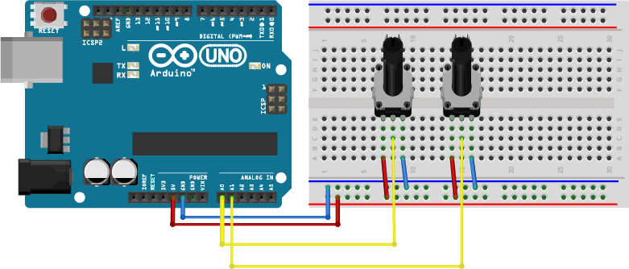

- Circuit
1. This example shows how to prepare custom JQuery script to control element without use of framework UI elements.
Connect potentiometers to pin A0 and A1
 - Edit the Arduino sketch
1. Add chromeSend to your sketch.
ARDUINO
void loop() {
chromeReceive();
chromeSend(0, analogRead(A0));
delay(1);
chromeSend(1, analogRead(A1));
delay(1);
}
- HTML and CSS
1. In this tutorial we need to create big square at the center of app screen. First add HTML code to create square.
HTML
<body>
<div class="square"></div>
</body>2. Create custom JavaScript file and CSS in Involt folder. Name the new files customjquery.js and customstyle.css. Link them in head section.
Important: You are not allowed to use inline scripting in Chrome App.
HTML
<script src="customjquery.js"></script>
<link rel="stylesheet" type="text/css" href="customstyle.css">
3. Edit CSS
CSS
.square{
margin: 200px auto;
width: 200px;
height: 200px;
background: gray;
}4. The final step is real-time manipulation of square. Use set interval to automatically update data. Each analog pin value is stored in "analogPins" array where index is the pin number. The 50ms delay is used to lower the CPU usage.
JS
setInterval(function(){
$(".square").css({
"width": analogPins[0],
"height": analogPins[0],
"transform": "rotate("+analogPins[1]+"deg)"
});
},50);5. To read more about JavaScript and JQuery support for Involt check the JavaScript section of getting started page.